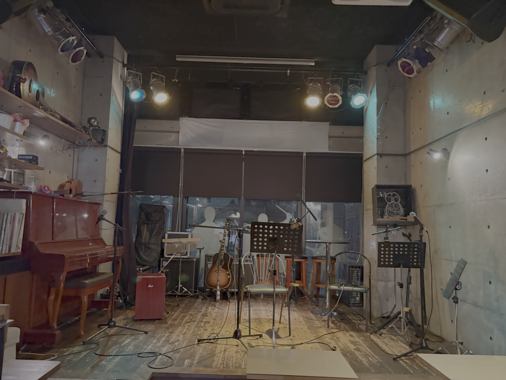
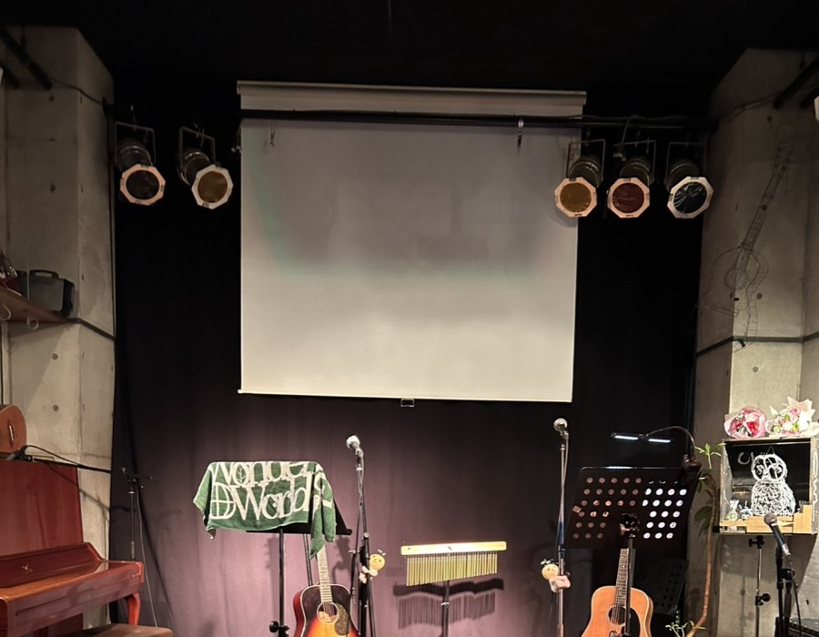
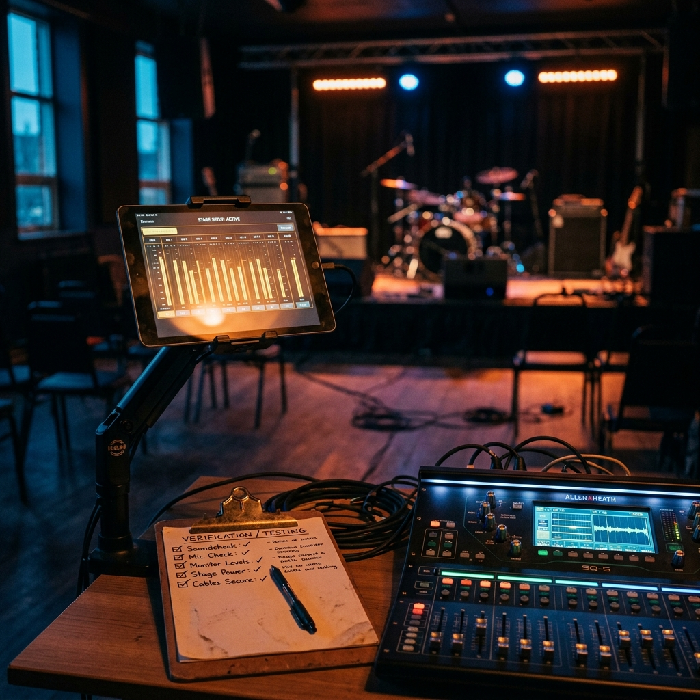

「+ラボ」とは？
（+ラボ）の括弧には、「メインはあくまでいつものフリーライブ」という意味を込めています。
アコギの弾き語りやバンドセッションなど、いつものパフォーマンスはそのままに、毎月変わる「実験企画」をオプションとして追加します。
β版（ベータ版）精神
未完成な部分も含めて、新しい試みを一緒に面白がって検証してくれる方を募集しています。完璧を求めず、実験を楽しむ精神で。
開発プロセスを共有
成功した実験は、将来的にOWLのレギュラーメニューとして正式実装されるかもしれません。あなたの参加が未来を変えます。
EXPERIMENT IN PROGRESS...
次回開催概要
いつものフリーライブ参加者の方も、1曲だけでも実験に参加してみることが可能です！
β版についてのお約束
「+ラボ」の実験企画は試験的な取り組みです。機材トラブルや想定外の結果も実験の一部として楽しんでいただけると幸いです。皆さまのフィードバックが次回のアップデートに繋がります。
ライブハウスでカラオケ
記念すべき第1回目の実験は、普段は絶対にできない場所でカラオケをやってみるという試み。専用タブレットとライブハウスの本格PA機材をリンクさせ、ステージに立って歌えます。

ライブハウスのステージに立てる
普段はアーティストしか立てないライブハウスのステージで、本格的なPA機材・照明に囲まれて歌える、ここだけの体験。

大画面に歌詞を投影
手元のタブレットの歌詞画面をステージの大型スクリーンにミラーリング。お客さんも一緒に見られるから、みんなで盛り上がれます。

一緒に検証するポイント
- ワイヤレスミラーリングの遅延
- ボーカル除去の音質
- 照明演出との連動性
$ echo "実験名: ライブハウスでカラオケ"
$ status --check
→ ステータス: TESTING
$ equipment "PA + Tablet + Vocal Canceler"
→ 機材セットアップ: READY
$ deploy --env=studio-owl
→ 検証開始を待機中... ▊
実験ログ
過去のアップデート履歴。実験の結果、どのような進展があったかを記録していきます。
Vol.1：ライブハウスでカラオケ
最新のボーカル除去技術を活用し、普段は立てないライブハウスのステージでカラオケに挑戦。
次の実験は...？
あなたのリクエストが次回のテーマになるかもしれません。
アイデア募集
「こんな機能（実験）が欲しい！」というリクエストを24時間受け付けています。
あなたの提案が次回の「+ラボ」で実装されるかもしれません。
{ 開発バックログ（検討中の案）}
🎙️ レコーディング実験
ライブの演奏をその場で本格レコーディングする試み
📸 アー写撮影会
ステージ上でプロ級のアーティスト写真を撮影
🍔 フードセルフ仕上げ企画
自分だけのスペシャルメニューを仕上げる体験
🎸 機材持ち込みテスト
自慢の機材をOWLの環境で鳴らしてみよう
あなたのアイデアを投稿する
Googleフォームから気軽にリクエストを送ってください（匿名OK）